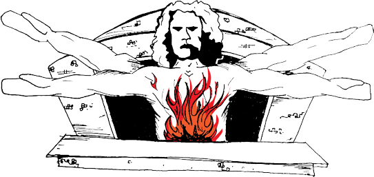

To work on the oven is to maintain its essence. One must maintain the oven within a certain limit, always dancing around a line and never crossing. It is a balancing act, a tightrope walk, to allow the oven to serve its purpose. The will of the oven is to contain the fire. The will of the cook is to produce food.
One must process time at a rate that is not human. The oven is a living, breathing organism, keeping a pace different than human speeds. It is a beast, it is a bull. It snorts and it kicks and it can run for hours without rest. The soul of the beast exists somewhere between the tension of two wills – the oven’s and the cook’s – it is in this void that the beast reveals itself, speaking through fire.
The oven swirls ashy fish born out of fire, swirls them round the window to sync itself to the perceptions of the cook, this is the oven recognizing you, conjuring a presence to comprehend, to recognize, to serve, to disappear or be forgotten in a cloud of smoke, consumed once again by fire.
What comes out of the oven is essential. To eat, drink, engage in what is essential. The oven gives food. Food supplies life. All else is vanity.
The oven exists before consciousness, in a pure state. It has a single will, and that is to will what is Good. Burns, destructions, deformations, are the broken focus of an oven cook, what it is to be human. To work the oven is to sustain concentration, engage with silence, watch the flame, open communication with the object, give up one’s own thoughts.
What the oven produces is a positive made from two negatives. The pizza becomes the replacement of two wills. Minus one raised to the second power.
The product is the sacrifice made by both the oven and the cook. If it is pure, the cook must become as blind as the oven, to produce equally and without hesitation, the same for all, lacking judgment, containing heat. Blind compassion for the eater and all others.
But human choice is mandatory, and inevitable. The ability to make a decision while working – when to spin, when to take, when to give. To cook on the oven is to exercise the precision of decision-making, taking control of what choices one makes. The oven gives so that one may take from it. To take is to make a choice. To make choices is to cook, and become artisan. In this way one must always remain human, in order to work upon what is not. The human is the artisan, while the oven is the object. Between these two is the soul that is fire.
